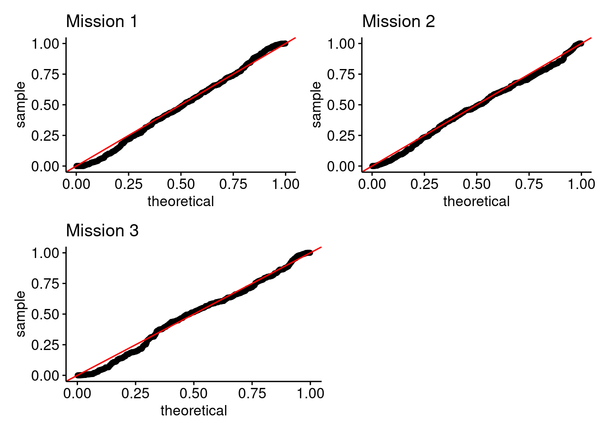
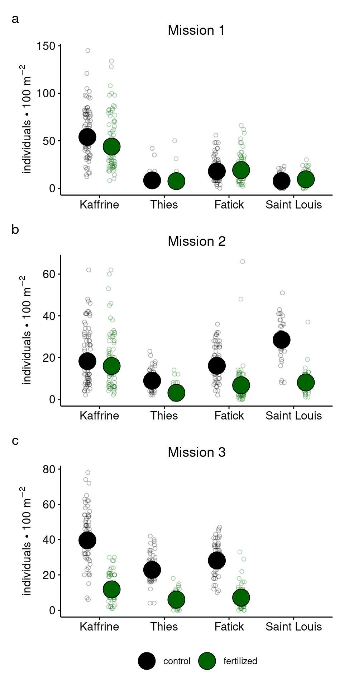
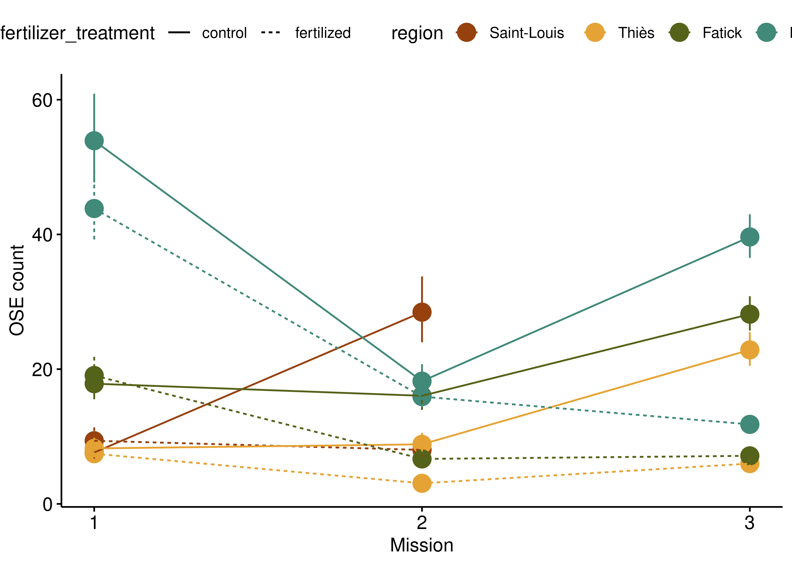
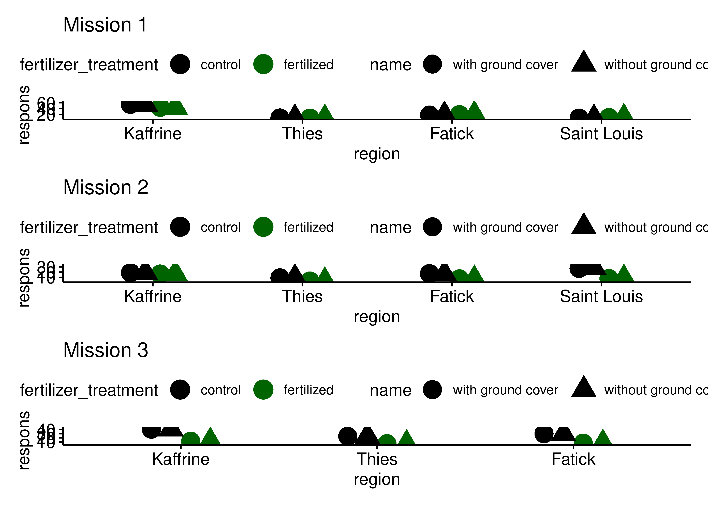

2021 Locust Density Analysis
Density patterns by treatment and region
NoteExploratory Work
This page contains exploratory analysis conducted during the development of the manuscript. These analyses informed our statistical approach and data management decisions. Not all content here appears in the final manuscript. For the final methods and results, see the Methods and Results page.
Summary
The goal of this page is to analyze locust density patterns across fertilizer treatments and regions. This analysis replicates key figures from the manuscript to ensure consistent theming and validates our data management approach. If you see errors, please let me know!
Locust density and region by treatment
To assess how locust count changes between treatment (fertilized and control) and region (four regions), I built a generalized linear mixed model (family: Poisson) per mission as follows:
\[ \begin{align*} \text{ose count}_{ij} =\ &\beta_0 \\ &+ \beta_1 \cdot \text{fertilizer treatment}_i \\ &+ \beta_2 \cdot \text{region}_i \\ &+ \beta_3 \cdot (\text{fertilizer treatment}_i \times \text{region}_i) \\ &+ u_j \\ &+ \varepsilon_{ij} \end{align*} \]
Where: - \(\text{ose count}_{ij}\): observed ose count for observation \(i\) from farmer \(j\) - \(\text{fertilizer treatment}_i\): fertilizer treatment group of observation \(i\) - \(\text{region}_i\): region of observation \(i\) - \((\text{fertilizer treatment}_i \times \text{region}_i)\): interaction between fertilizer treatment and region - \(u_j\): random effect for farmer \(j\), \(u_j \sim N(0, \sigma^2_{farmer})\) - \(\varepsilon_{ij}\): residual error
Below are the diagnostic plots for these models:
These models are not perfect, but I think they are adequate for this analysis. Happy to investigate further if you would like me to!
OSE density by treatment and region (option 1)

OSE density by treatment and region (option 2)
Instead of a plot per mission, let’s plot the missions together (x-axis) and see how region counts shifted through time

OSE density by teatment and region model summaries (tabulated)
Here are the model summaries and pairwise comparisons. This will be across missions, but please keep in mind each mission had it’s own model. So we cant make across-mission comparions just yet.
| OSE density by treatment and region by mission | |||||
| Effect | Term | Estimate | Std. Error | Statistic | P-value |
|---|---|---|---|---|---|
| 1 | |||||
| fixed | (Intercept) | 2.032 | 0.101 | 20.165 | 0.000 |
| fixed | fertilized | 0.206 | 0.071 | 2.913 | 0.004 |
| fixed | Thiès | 0.077 | 0.135 | 0.568 | 0.570 |
| fixed | Fatick | 0.850 | 0.123 | 6.917 | 0.000 |
| fixed | Kaffrine | 1.955 | 0.118 | 16.526 | 0.000 |
| fixed | fertilized:Thiès | −0.307 | 0.098 | −3.129 | 0.002 |
| fixed | fertilized:Fatick | −0.140 | 0.081 | −1.734 | 0.083 |
| fixed | fertilized:Kaffrine | −0.413 | 0.074 | −5.561 | 0.000 |
| random | farmer | 0.527 | NA | NA | NA |
| 2 | |||||
| fixed | (Intercept) | 3.349 | 0.087 | 38.402 | 0.000 |
| fixed | fertilized | −1.267 | 0.062 | −20.348 | 0.000 |
| fixed | Thiès | −1.169 | 0.126 | −9.287 | 0.000 |
| fixed | Fatick | −0.573 | 0.113 | −5.088 | 0.000 |
| fixed | Kaffrine | −0.446 | 0.109 | −4.076 | 0.000 |
| fixed | fertilized:Thiès | 0.205 | 0.110 | 1.859 | 0.063 |
| fixed | fertilized:Fatick | 0.390 | 0.083 | 4.716 | 0.000 |
| fixed | fertilized:Kaffrine | 1.133 | 0.072 | 15.653 | 0.000 |
| random | farmer | 0.523 | NA | NA | NA |
| 3 | |||||
| fixed | (Intercept) | 3.129 | 0.056 | 55.959 | 0.000 |
| fixed | fertilized | −1.341 | 0.065 | −20.676 | 0.000 |
| fixed | Fatick | 0.209 | 0.072 | 2.884 | 0.004 |
| fixed | Kaffrine | 0.550 | 0.070 | 7.907 | 0.000 |
| fixed | fertilized:Fatick | −0.032 | 0.082 | −0.395 | 0.693 |
| fixed | fertilized:Kaffrine | 0.129 | 0.075 | 1.725 | 0.085 |
| random | farmer | 0.319 | NA | NA | NA |
Here are the pairwise comparisons between region and treatment by mission number. Fair warning, its a large table since there are a lot of regions.
| OSE density model pairwise comparisons by mission | ||||||
| contrast | ratio | SE | df | null | z.ratio | p.value |
|---|---|---|---|---|---|---|
| 1 | ||||||
| (control Saint-Louis) / (fertilized Saint-Louis) | 0.814 | 0.058 | Inf | 1 | −2.913 | 0.070 |
| (control Saint-Louis) / control Fatick | 0.428 | 0.053 | Inf | 1 | −6.917 | 0.000 |
| (control Saint-Louis) / control Kaffrine | 0.142 | 0.017 | Inf | 1 | −16.526 | 0.000 |
| (control Saint-Louis) / control Thiès | 0.926 | 0.125 | Inf | 1 | −0.568 | 0.999 |
| (control Saint-Louis) / fertilized Fatick | 0.400 | 0.049 | Inf | 1 | −7.501 | 0.000 |
| (control Saint-Louis) / fertilized Kaffrine | 0.174 | 0.021 | Inf | 1 | −14.757 | 0.000 |
| (control Saint-Louis) / fertilized Thiès | 1.025 | 0.139 | Inf | 1 | 0.179 | 1.000 |
| (fertilized Saint-Louis) / control Fatick | 0.525 | 0.063 | Inf | 1 | −5.332 | 0.000 |
| (fertilized Saint-Louis) / control Kaffrine | 0.174 | 0.020 | Inf | 1 | −15.064 | 0.000 |
| (fertilized Saint-Louis) / control Thiès | 1.138 | 0.151 | Inf | 1 | 0.971 | 0.978 |
| (fertilized Saint-Louis) / fertilized Fatick | 0.492 | 0.059 | Inf | 1 | −5.916 | 0.000 |
| (fertilized Saint-Louis) / fertilized Kaffrine | 0.214 | 0.025 | Inf | 1 | −13.264 | 0.000 |
| (fertilized Saint-Louis) / fertilized Thiès | 1.259 | 0.168 | Inf | 1 | 1.722 | 0.673 |
| control Fatick / control Kaffrine | 0.331 | 0.031 | Inf | 1 | −11.760 | 0.000 |
| control Fatick / fertilized Fatick | 0.936 | 0.037 | Inf | 1 | −1.677 | 0.702 |
| control Fatick / fertilized Kaffrine | 0.407 | 0.038 | Inf | 1 | −9.539 | 0.000 |
| control Kaffrine / fertilized Kaffrine | 1.230 | 0.028 | Inf | 1 | 9.176 | 0.000 |
| control Thiès / control Fatick | 0.462 | 0.053 | Inf | 1 | −6.754 | 0.000 |
| control Thiès / control Kaffrine | 0.153 | 0.017 | Inf | 1 | −17.159 | 0.000 |
| control Thiès / fertilized Fatick | 0.432 | 0.049 | Inf | 1 | −7.383 | 0.000 |
| control Thiès / fertilized Kaffrine | 0.188 | 0.021 | Inf | 1 | −15.244 | 0.000 |
| control Thiès / fertilized Thiès | 1.106 | 0.075 | Inf | 1 | 1.485 | 0.816 |
| fertilized Fatick / control Kaffrine | 0.353 | 0.033 | Inf | 1 | −11.183 | 0.000 |
| fertilized Fatick / fertilized Kaffrine | 0.435 | 0.041 | Inf | 1 | −8.938 | 0.000 |
| fertilized Thiès / control Fatick | 0.417 | 0.048 | Inf | 1 | −7.592 | 0.000 |
| fertilized Thiès / control Kaffrine | 0.138 | 0.015 | Inf | 1 | −17.966 | 0.000 |
| fertilized Thiès / fertilized Fatick | 0.391 | 0.045 | Inf | 1 | −8.223 | 0.000 |
| fertilized Thiès / fertilized Kaffrine | 0.170 | 0.019 | Inf | 1 | −16.062 | 0.000 |
| 2 | ||||||
| (control Saint-Louis) / (fertilized Saint-Louis) | 3.552 | 0.221 | Inf | 1 | 20.348 | 0.000 |
| (control Saint-Louis) / control Fatick | 1.774 | 0.200 | Inf | 1 | 5.088 | 0.000 |
| (control Saint-Louis) / control Kaffrine | 1.562 | 0.171 | Inf | 1 | 4.076 | 0.001 |
| (control Saint-Louis) / control Thiès | 3.219 | 0.405 | Inf | 1 | 9.287 | 0.000 |
| (control Saint-Louis) / fertilized Fatick | 4.264 | 0.498 | Inf | 1 | 12.427 | 0.000 |
| (control Saint-Louis) / fertilized Kaffrine | 1.787 | 0.196 | Inf | 1 | 5.297 | 0.000 |
| (control Saint-Louis) / fertilized Thiès | 9.313 | 1.296 | Inf | 1 | 16.030 | 0.000 |
| (fertilized Saint-Louis) / control Fatick | 0.499 | 0.061 | Inf | 1 | −5.724 | 0.000 |
| (fertilized Saint-Louis) / control Kaffrine | 0.440 | 0.052 | Inf | 1 | −6.941 | 0.000 |
| (fertilized Saint-Louis) / control Thiès | 0.906 | 0.121 | Inf | 1 | −0.735 | 0.996 |
| (fertilized Saint-Louis) / fertilized Fatick | 1.200 | 0.150 | Inf | 1 | 1.461 | 0.828 |
| (fertilized Saint-Louis) / fertilized Kaffrine | 0.503 | 0.060 | Inf | 1 | −5.796 | 0.000 |
| (fertilized Saint-Louis) / fertilized Thiès | 2.622 | 0.383 | Inf | 1 | 6.591 | 0.000 |
| control Fatick / control Kaffrine | 0.881 | 0.086 | Inf | 1 | −1.306 | 0.897 |
| control Fatick / fertilized Fatick | 2.404 | 0.131 | Inf | 1 | 16.077 | 0.000 |
| control Fatick / fertilized Kaffrine | 1.008 | 0.098 | Inf | 1 | 0.078 | 1.000 |
| control Kaffrine / fertilized Kaffrine | 1.144 | 0.042 | Inf | 1 | 3.652 | 0.006 |
| control Thiès / control Fatick | 0.551 | 0.064 | Inf | 1 | −5.166 | 0.000 |
| control Thiès / control Kaffrine | 0.485 | 0.054 | Inf | 1 | −6.444 | 0.000 |
| control Thiès / fertilized Fatick | 1.324 | 0.158 | Inf | 1 | 2.355 | 0.264 |
| control Thiès / fertilized Kaffrine | 0.555 | 0.062 | Inf | 1 | −5.237 | 0.000 |
| control Thiès / fertilized Thiès | 2.893 | 0.264 | Inf | 1 | 11.652 | 0.000 |
| fertilized Fatick / control Kaffrine | 0.366 | 0.037 | Inf | 1 | −9.858 | 0.000 |
| fertilized Fatick / fertilized Kaffrine | 0.419 | 0.043 | Inf | 1 | −8.521 | 0.000 |
| fertilized Thiès / control Fatick | 0.190 | 0.025 | Inf | 1 | −12.779 | 0.000 |
| fertilized Thiès / control Kaffrine | 0.168 | 0.021 | Inf | 1 | −14.063 | 0.000 |
| fertilized Thiès / fertilized Fatick | 0.458 | 0.061 | Inf | 1 | −5.863 | 0.000 |
| fertilized Thiès / fertilized Kaffrine | 0.192 | 0.024 | Inf | 1 | −12.988 | 0.000 |
| 3 | ||||||
| control Fatick / control Kaffrine | 0.711 | 0.044 | Inf | 1 | −5.507 | 0.000 |
| control Fatick / fertilized Fatick | 3.947 | 0.199 | Inf | 1 | 27.260 | 0.000 |
| control Fatick / fertilized Kaffrine | 2.386 | 0.161 | Inf | 1 | 12.898 | 0.000 |
| control Kaffrine / fertilized Kaffrine | 3.357 | 0.127 | Inf | 1 | 32.021 | 0.000 |
| control Thiès / control Fatick | 0.812 | 0.059 | Inf | 1 | −2.884 | 0.045 |
| control Thiès / control Kaffrine | 0.577 | 0.040 | Inf | 1 | −7.907 | 0.000 |
| control Thiès / fertilized Fatick | 3.204 | 0.259 | Inf | 1 | 14.383 | 0.000 |
| control Thiès / fertilized Kaffrine | 1.937 | 0.144 | Inf | 1 | 8.882 | 0.000 |
| control Thiès / fertilized Thiès | 3.822 | 0.248 | Inf | 1 | 20.676 | 0.000 |
| fertilized Fatick / control Kaffrine | 0.180 | 0.013 | Inf | 1 | −23.850 | 0.000 |
| fertilized Fatick / fertilized Kaffrine | 0.604 | 0.046 | Inf | 1 | −6.572 | 0.000 |
| fertilized Thiès / control Fatick | 0.212 | 0.018 | Inf | 1 | −17.918 | 0.000 |
| fertilized Thiès / control Kaffrine | 0.151 | 0.013 | Inf | 1 | −22.462 | 0.000 |
| fertilized Thiès / fertilized Fatick | 0.839 | 0.079 | Inf | 1 | −1.878 | 0.416 |
| fertilized Thiès / fertilized Kaffrine | 0.507 | 0.045 | Inf | 1 | −7.702 | 0.000 |
Table: annual OSE density by region and field type
The data discrepancies seen the the OSE count x ground cover are really shown in this table as well. We can see that the trends are the same (e.g. fertilized plots have less than control), but the actual averages are totally different.
| Mean OSE Count by Region and Fertilizer Treatment | ||||
| Saint Louis | Thies | Fatick | Kaffrine | |
|---|---|---|---|---|
| fertilized | 9.95 | 6.10 | 12.28 | 26.64 |
| control | 19.10 | 14.46 | 22.61 | 41.14 |
OSE count by treatment/region accounting for ground cover perent
The first test is to compare a model with ground cover and a model without ground cover. We will build both models per mission and then compare the estimated marginal means.

mission_number AIC_with_gc AIC_without_gc best_model
1 1 3444.225 3476.319 with ground cover
2 2 2938.309 3070.102 with ground cover
3 3 2582.569 2595.736 with ground cover